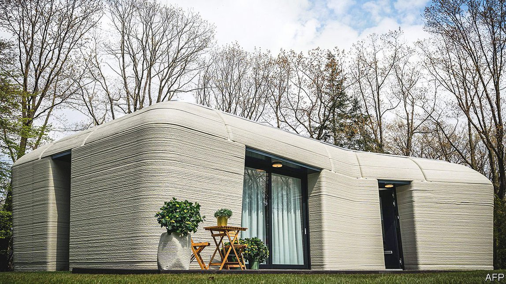

2021-09-30T14:55:06+00:00
建筑工艺
3D打印房屋崛起
你的下一个家可能是打印出来的
加州各地的一批新房正以异常快的速度卖出去。过去两个月里，82套房子被抢购一空，而等候名单上还有1000人。不过，这一需求应该很快就会得到满足，因为虽然建造一栋传统的实体房屋可能需要花上好几周，但这些房子背后的合作者——Palari Homes和Mighty Buildings——不到24小时就能盖完一栋。之所以能如此神速，是因为它们的产品是由工厂预制的部件组装而成的。这本身并不是什么新创意。但这些部件的制造方式非同寻常：它们是打印出来的。
3D打印在上世纪80年代初就已问世，但现在开始发力。它已被用于制造从骨科植入物到飞机零部件等各类物品。技术细节因具体的产品和工艺而异，但基本原理相同。先铺好一层材料，固定在适当位置。在其上铺设另一层。再加一层。再加一层。通过改变每层的形状，有时也改变其构成，可以制作出用传统技术难以或无法生产的物件。除此之外，不同于传统的制造工艺，没有材料被浪费掉。
只需按下“打印”键
Palari Homes和Mighty Buildings使用的打印机比制造人造膝盖和翼尖所需的打印机大不少，所用的材料也更粗糙一些。但原理相同。喷嘴挤出一种膏体（在这里是一种复合材料），之后经紫外线照射固化。这让Mighty Buildings无需使用支撑模具就能打印出屋檐和天花板等部件，以及墙壁等更简单的部分。这些部件之后由Palari Homes的建筑工人现场组装起来，固定在永久的地基上。
3D打印不仅能提升制造的多样性和速度，也有望比现有的可能性更节省成本也更环保。这可能会让它成为如今世界面临的两大挑战——住房短缺和气候变化——的一种有效解决办法。约有16亿人——超过地球人口的20%——缺乏充足的住所。而全世界人为的二氧化碳排放有11%来自建筑业，但该行业的碳足迹并无缩小的迹象。
自动化极大地节约了成本。Mighty Buildings表示，将其打印流程的80%计算机化意味着公司需要的劳动力只相当于原本所需水平的5%。它还将生产速度翻了一番。这是个好消息，建筑业多年来在提高生产率方面进展缓慢。据咨询公司麦肯锡估计，在过去20年间，建筑业的生产率增速仅为世界经济整体生产率增速的三分之一。这个行业的数字化进程几乎比其他所有行业都慢。多地的建筑业也为熟练劳动力短缺所困扰。而且这种情况预计还会恶化。比如在美国，约40%的建筑从业人员预计将在十年内退休。
环境上的益处源于几方面，但其中重要的一点是不大需要搬动大量重物了。例如，Palari Homes估计，预制产品减少了盖一栋房子需要卡车运输的趟数，足以让建造每栋住宅的碳排放量减少两吨。
此外，Palari Homes和Mighty Buildings并非唯一在尝试这种方式的团队。类似的项目在各地都在开展，它们绝大多数都使用混凝土打印建筑物结构。在马拉维经营的14Trees是全世界最大的水泥制造商霍尔希姆（Holcim）和英国政府下属开发融资公司英联邦投资集团（CDC Group）的合资企业。该公司称它能在短短12小时内打印出一栋房子，标价一万美元不到。14Trees还说，除了便宜又快速外，打印过程也十分环保。霍尔希姆声称可以通过精确投放所需的水泥量来减少浪费，因而这种3D打印产生的碳排放仅为使用烧结粘土砖这种在当地常用的方法的30%。
同时，在墨西哥，一家名为新故事（New Story）的援助无家可归者的慈善机构与3D打印公司ICON建立了合作关系，建造了十栋建筑面积为46平方米的房子。每栋房子用时约24小时打印（不过这是分散在几天内的用时总和），最后的部件由当地另一家慈善机构Échale组装而成。而在欧洲，第一栋3D打印房屋位于荷兰的埃因霍温（见上图），钥匙于7月30日交到了房客手上。
千层蛋糕
这栋房子是由埃因霍温市政府和埃因霍温科技大学联合打造的五幢独栋两卧住宅的第一幢，是几家企业的合作成果。法国建材公司圣戈班（Saint-Gobain）的荷兰分部研发出所需的混凝土砂浆。建筑公司Van Wijnen完成建造，咨询公司Witteveen+Bos负责工程设计。房主荷兰住宅地产投资商Vesteda把它出租了出去。
然而，制造这类住宅区所需的水泥却不是一道绿色工序。它将石灰岩形式的碳酸钙转化为氧化钙和二氧化碳。据估计，人为排放二氧化碳的8%来自于该工序。因此，得克萨斯农工大学（Texas A&M University）由萨尔巴吉特·班纳吉（Sarbajit Banerjee）领导的一个小组研发了一种免除这道工序的办法。
班纳吉使用新建材的灵感源自他几年前策划的一项工程：就地取材来修建通往加拿大阿尔伯塔省的偏远地区的补给线路。他设计的铺路石把当地的土壤与木质纤维的护根混在一起，由液体或水溶性硅酸盐凝聚起来，之后硬化并用作水泥。在建造房屋时，他利用建筑工地附近表土以下的任何粘土和岩屑，将其压成粉末并与硅酸盐混合。形成的产物可以用喷嘴挤出，之后迅速凝固并增强，以维持形状并承受下一层的重量。因此，这一过程是双倍环保的。它省去了水泥，同时也不再需要把常规混凝土中使用的沙子和骨料运送到工地——通常都还是长距离运输。
实打实的好处
3D打印房屋也有其局限性。首先，建筑规范需要调整以适应这些新建筑。为此，美国最大的认证机构之一UL已与Mighty Buildings合作，制定出了首个3D打印标准。这些指导方针将被纳入新的《国际住宅规范》（International Residential Code），目前该法规已在全美除威斯康星州外的所有州实施或被通过。虽然这对于一个新兴行业而言是个有力的助推，但世界上大多数政府尚未出台具体到本国的标准。3D打印机建造的房屋的质量和装修也面临质疑。
即便如此，行进的方向看上去一片光明。去年，一项3D打印公寓楼的规划在德国获批。这座三层建筑由德国建筑公司Peri使用丹麦公司Cobod研发的打印机制作的部件组装而成，将包含五套公寓。在中东和亚洲，3D打印技术的使用也在拓展。迪拜政府希望到2030年该国四分之一的新建筑都由3D打印而成，并在首都迪拜的郊区专门划出一个区来让3D打印企业及其仓库落户。沙特阿拉伯希望在未来十年间利用3D打印技术建150万套房。而印度住房和城市事务部希望利用3D打印解决本国的住房短缺问题。
如果能成功，3D打印建筑应该还会扩展到住房之外。仓储、办公室及其他商业建筑中也蕴藏着发展机会。而除了地球上的建筑之外，美国国家航空航天局（NASA）正在探索使用3D打印在火星和月球上建造着陆平台、住所和公路。这两个天体上没有土壤，只有被称为“壤”的岩石碎屑。班纳吉的研究团队正在与NASA合作，表示其3D打印方法对这种材料同样有效。“我们最终希望能在火星和月球上拥有住宅，但我们不能把混凝土带上去，”班纳吉说，“我们将不得不利用这些壤。”
2021-09-30T14:55:06+00:00
Construction techniques
The rise of 3D-printed houses
Your next home could be a printout
A BATCH OF new houses across California is selling unusually fast. In the past two months, 82 have been snapped up, and the waiting list is 1,000 long. That demand should, though, soon be satisfied—for, while it can take weeks to put up a conventional bricks-and-mortar dwelling, Palari Homes and Mighty Buildings, the collaborators behind these houses, are able to erect one in less than 24 hours. They can do it so rapidly because their products are assembled from components prefabricated in a factory. This is not, in itself, a new idea. But the components involved are made in an unusual way: they are printed.
Three-dimensional (3D) printing has been around since the early 1980s, but is now gathering steam. It is already employed to make things ranging from orthopaedic implants to components for aircraft. The details vary according to the products and processes involved, but the underlying principle is the same. A layer of material is laid down and somehow fixed in place. Then another is put on top of it. Then another. Then another. By varying the shape, and sometimes the composition of each layer, objects can be crafted that would be difficult or impossible to produce with conventional techniques. On top of this, unlike conventional manufacturing processes, no material is wasted.
Just press “print”
In the case of Palari Homes and Mighty Buildings, the printers are rather larger than those required for artificial knees and wing tips, and the materials somewhat cruder. But the principle is the same. Nozzles extrude a paste (in this case a composite) which is then cured and hardened by ultraviolet light. That allows Mighty Buildings to print parts such as eaves and ceilings without the need for supporting moulds—as well as simpler things like walls. These are then put together on site and attached to a permanent foundation by Palari Homes’ construction workers.
Not only does 3D-printing allow greater versatility and faster construction, it also promises lower cost and in a more environmentally friendly approach than is possible at present. That may make it a useful answer to two challenges now facing the world: a shortage of housing and climate change. About 1.6bn people—more than 20% of Earth’s population—lack adequate accommodation. And the construction industry is responsible for 11% of the world’s man-made carbon-dioxide emissions. Yet the industry’s carbon footprint shows no signs of shrinking.
Automation brings huge cost savings. Mighty Buildings says computerising 80% of its printing process means the firm needs only 5% of the labour that would otherwise be involved. It has also doubled the speed of production. This is welcome news, the construction industry having struggled for years to improve its productivity. Over the past two decades this has grown at only a third of the rate of productivity in the world economy as a whole, according to McKinsey, a consultancy. Digitalisation has been slower than in nearly any other trade. The industry is also plagued, in many places, by shortages of skilled labour. And that is expected to get worse. In America, for example, around 40% of those employed in construction are expected to retire within a decade.
The environmental benefits come in several ways, but an important one is that there is less need to move lots of heavy stuff about. Palari Homes, for instance, estimates that prefabricating its products reduces the number of lorry journeys involved in building a house sufficiently to slash two tonnes off the amount of carbon dioxide emitted per home.
Palari Homes and Mighty Buildings are not, moreover, alone in their endeavours. Similar projects are being started up all over the place. The vast majority print structures using concrete. 14Trees, a joint venture between Holcim—the world’s biggest cement-maker—and CDC Group, a British-government development-finance outfit, operates in Malawi. It says it is able to print a house there in just 12 hours, with a price tag of less than $10,000. Besides being cheap and quick, 14Trees says this process is green as well. Holcim claims that by depositing the precise amount of cement required and thereby reducing waste, 3D printing generates only 30% as much carbon dioxide as using burnt-clay brick, a common technique in Malawi.
In Mexico, meanwhile, a charity for the homeless called New Story has created a partnership with ICON, a 3D-printing firm, to erect ten houses with floor areas of 46 square metres. Each was printed in around 24 hours (though these hours were spread over several days), with the final features assembled by Échale, another local charity. And in Europe the keys to the continent’s first 3D-printed home, in Eindhoven, in the Netherlands (pictured above), were handed over to its tenants on July 30th.
Layer cakes
The house in question, the first of five detached, two-bedroom dwellings in a project co-ordinated by Eindhoven’s municipal government and the city’s University of Technology, is a collaboration between several firms. The Dutch arm of Saint-Gobain, a French building-materials company, developed the concrete mortar needed. Van Wijnen, a construction firm, built the thing, while Witteveen+Bos, a consultancy, was responsible for the engineering. It is being rented out by its owner, Vesteda, a Dutch residential-property investor.
Making the cement involved in projects like this is not, however, a green process. It turns calcium carbonate in the form of limestone into calcium oxide and carbon dioxide, and is reckoned responsible for about 8% of anthropogenic emissions of that gas. A group at Texas A&M University, led by Sarbajit Banerjee, has therefore developed a way to dispense with it.
Dr Banerjee’s new building material was inspired by a project he masterminded some years ago to construct supply roads to remote parts of the Canadian province of Alberta using stuff immediately to hand. The road metal he devised combined local soil with a mulch of wood fibres, and was held together by liquid or water-soluble silicates that then hardened and acted as cement. To build houses he uses whatever clay and rock debris is lying around under the topsoil near the construction site, crushes it into a powder and blends it with silicates. The result can then be squeezed through a nozzle, after which it rapidly consolidates and gains strength, so as to hold its shape and bear the weight of the next layer. The process is thus doubly green. It eliminates both cement and the need to transport to the site, often over long distances, the sand and aggregates used in conventional concrete.
Concrete benefits
There are limitations to 3D-printed homes. For a start, construction codes need to be tweaked to accommodate them. To this end UL, one of America’s largest certifying agencies, has collaborated with Mighty Buildings to develop the first 3D-printing standard. The guidelines will be included in the new International Residential Code, which is in use in, or has been adopted by, all American states save Wisconsin. While this is a welcome boost to a fledgling industry, most governments have yet to come up with country-specific standards. There are also questions about the quality and finish of homes built by 3D printers.
Even so, the direction of travel looks promising. Last year, plans for a 3D-printed apartment building were approved in Germany. This three-floored structure, assembled by Peri, a German construction company, from parts made using printers developed by Cobod, a Danish firm, will contain five flats. Use of the technology is also expanding in the Middle East and Asia. Dubai’s government wants a quarter of new buildings in the country to be 3D-printed by 2030, and is dedicating a district on the outskirts of it eponymous capital to host 3D-printing companies and their warehouses. Saudi Arabia wants to use 3D printing to build 1.5m houses over the next decade. And India’s Ministry of Housing and Urban Affairs wants to use 3D printing to address the country’s housing shortages.
If successful, building by 3D printing is likely to spread beyond housing. Opportunities also exist in warehousing, offices and other commercial buildings. And beyond earthly structures, NASA, America’s space agency, is exploring the use of 3D printing to build landing pads, accommodation and roads on Mars and the Moon. There is no soil on those two celestial bodies, just shattered rock called regolith. Dr Banerjee’s group, which is working with NASA, says its approach to 3D printing functions just as well with this material. “We would ultimately like to have property on Mars and the Moon but we’re not going to be able to take concrete up there with us,” says Dr Banerjee. “We’re going to have to work with regolith.” ■
2021-09-30T14:55:06+00:00
建築工藝
3D打印房屋崛起
你的下一個家可能是打印出來的
加州各地的一批新房正以異常快的速度賣出去。過去兩個月里，82套房子被搶購一空，而等候名單上還有1000人。不過，這一需求應該很快就會得到滿足，因為雖然建造一棟傳統的實體房屋可能需要花上好幾周，但這些房子背後的合作者——Palari Homes和Mighty Buildings——不到24小時就能蓋完一棟。之所以能如此神速，是因為它們的產品是由工廠預製的部件組裝而成的。這本身並不是什麼新創意。但這些部件的製造方式非同尋常：它們是打印出來的。
3D打印在上世紀80年代初就已問世，但現在開始發力。它已被用於製造從骨科植入物到飛機零部件等各類物品。技術細節因具體的產品和工藝而異，但基本原理相同。先鋪好一層材料，固定在適當位置。在其上鋪設另一層。再加一層。再加一層。通過改變每層的形狀，有時也改變其構成，可以製作出用傳統技術難以或無法生產的物件。除此之外，不同於傳統的製造工藝，沒有材料被浪費掉。
只需按下“打印”鍵
Palari Homes和Mighty Buildings使用的打印機比製造人造膝蓋和翼尖所需的打印機大不少，所用的材料也更粗糙一些。但原理相同。噴嘴擠出一種膏體（在這裡是一種複合材料），之後經紫外線照射固化。這讓Mighty Buildings無需使用支撐模具就能打印出屋檐和天花板等部件，以及牆壁等更簡單的部分。這些部件之後由Palari Homes的建築工人現場組裝起來，固定在永久的地基上。
3D打印不僅能提升製造的多樣性和速度，也有望比現有的可能性更節省成本也更環保。這可能會讓它成為如今世界面臨的兩大挑戰——住房短缺和氣候變化——的一種有效解決辦法。約有16億人——超過地球人口的20%——缺乏充足的住所。而全世界人為的二氧化碳排放有11%來自建築業，但該行業的碳足跡並無縮小的跡象。
自動化極大地節約了成本。Mighty Buildings表示，將其打印流程的80%計算機化意味着公司需要的勞動力只相當於原本所需水平的5%。它還將生產速度翻了一番。這是個好消息，建築業多年來在提高生產率方面進展緩慢。據諮詢公司麥肯錫估計，在過去20年間，建築業的生產率增速僅為世界經濟整體生產率增速的三分之一。這個行業的數字化進程幾乎比其他所有行業都慢。多地的建築業也為熟練勞動力短缺所困擾。而且這種情況預計還會惡化。比如在美國，約40%的建築從業人員預計將在十年內退休。
環境上的益處源於幾方面，但其中重要的一點是不大需要搬動大量重物了。例如，Palari Homes估計，預製產品減少了蓋一棟房子需要卡車運輸的趟數，足以讓建造每棟住宅的碳排放量減少兩噸。
此外，Palari Homes和Mighty Buildings並非唯一在嘗試這種方式的團隊。類似的項目在各地都在開展，它們絕大多數都使用混凝土打印建築物結構。在馬拉維經營的14Trees是全世界最大的水泥製造商霍爾希姆（Holcim）和英國政府下屬開發融資公司英聯邦投資集團（CDC Group）的合資企業。該公司稱它能在短短12小時內打印出一棟房子，標價一萬美元不到。14Trees還說，除了便宜又快速外，打印過程也十分環保。霍爾希姆聲稱可以通過精確投放所需的水泥量來減少浪費，因而這種3D打印產生的碳排放僅為使用燒結粘土磚這種在當地常用的方法的30%。
同時，在墨西哥，一家名為新故事（New Story）的援助無家可歸者的慈善機構與3D打印公司ICON建立了合作關係，建造了十棟建築面積為46平方米的房子。每棟房子用時約24小時打印（不過這是分散在幾天內的用時總和），最後的部件由當地另一家慈善機構Échale組裝而成。而在歐洲，第一棟3D打印房屋位於荷蘭的埃因霍溫（見上圖），鑰匙於7月30日交到了房客手上。
千層蛋糕
這棟房子是由埃因霍溫市政府和埃因霍溫科技大學聯合打造的五幢獨棟兩卧住宅的第一幢，是幾家企業的合作成果。法國建材公司聖戈班（Saint-Gobain）的荷蘭分部研發出所需的混凝土砂漿。建築公司Van Wijnen完成建造，諮詢公司Witteveen+Bos負責工程設計。房主荷蘭住宅地產投資商Vesteda把它出租了出去。
然而，製造這類住宅區所需的水泥卻不是一道綠色工序。它將石灰岩形式的碳酸鈣轉化為氧化鈣和二氧化碳。據估計，人為排放二氧化碳的8%來自於該工序。因此，得克薩斯農工大學（Texas A&M University）由薩爾巴吉特·班納吉（Sarbajit Banerjee）領導的一個小組研發了一種免除這道工序的辦法。
班納吉使用新建材的靈感源自他幾年前策劃的一項工程：就地取材來修建通往加拿大阿爾伯塔省的偏遠地區的補給線路。他設計的鋪路石把當地的土壤與木質纖維的護根混在一起，由液體或水溶性硅酸鹽凝聚起來，之後硬化並用作水泥。在建造房屋時，他利用建築工地附近表土以下的任何粘土和岩屑，將其壓成粉末並與硅酸鹽混合。形成的產物可以用噴嘴擠出，之後迅速凝固並增強，以維持形狀並承受下一層的重量。因此，這一過程是雙倍環保的。它省去了水泥，同時也不再需要把常規混凝土中使用的沙子和骨料運送到工地——通常都還是長距離運輸。
實打實的好處
3D打印房屋也有其局限性。首先，建築規範需要調整以適應這些新建築。為此，美國最大的認證機構之一UL已與Mighty Buildings合作，制定出了首個3D打印標準。這些指導方針將被納入新的《國際住宅規範》（International Residential Code），目前該法規已在全美除威斯康星州外的所有州實施或被通過。雖然這對於一個新興行業而言是個有力的助推，但世界上大多數政府尚未出台具體到本國的標準。3D打印機建造的房屋的質量和裝修也面臨質疑。
即便如此，行進的方向看上去一片光明。去年，一項3D打印公寓樓的規劃在德國獲批。這座三層建築由德國建築公司Peri使用丹麥公司Cobod研發的打印機製作的部件組裝而成，將包含五套公寓。在中東和亞洲，3D打印技術的使用也在拓展。迪拜政府希望到2030年該國四分之一的新建築都由3D打印而成，並在首都迪拜的郊區專門划出一個區來讓3D打印企業及其倉庫落戶。沙特阿拉伯希望在未來十年間利用3D打印技術建150萬套房。而印度住房和城市事務部希望利用3D打印解決本國的住房短缺問題。
如果能成功，3D打印建築應該還會擴展到住房之外。倉儲、辦公室及其他商業建築中也蘊藏着發展機會。而除了地球上的建築之外，美國國家航空航天局（NASA）正在探索使用3D打印在火星和月球上建造着陸平台、住所和公路。這兩個天體上沒有土壤，只有被稱為“壤”的岩石碎屑。班納吉的研究團隊正在與NASA合作，表示其3D打印方法對這種材料同樣有效。“我們最終希望能在火星和月球上擁有住宅，但我們不能把混凝土帶上去，”班納吉說，“我們將不得不利用這些壤。”